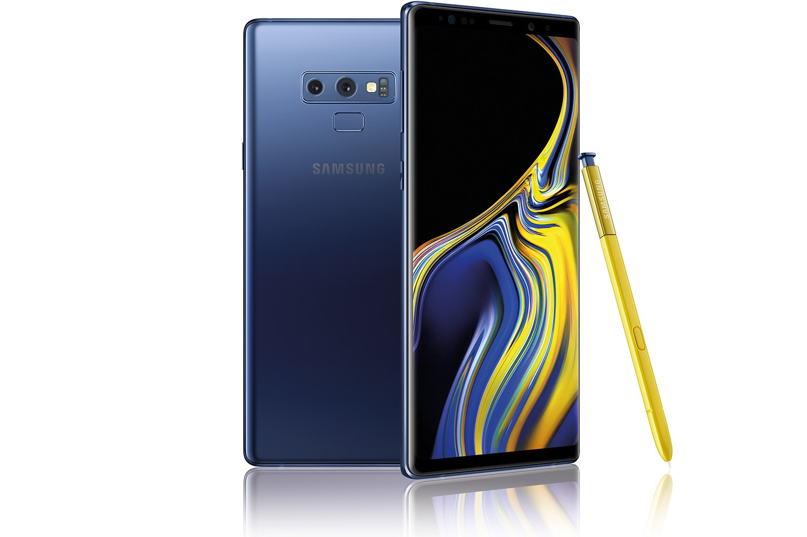
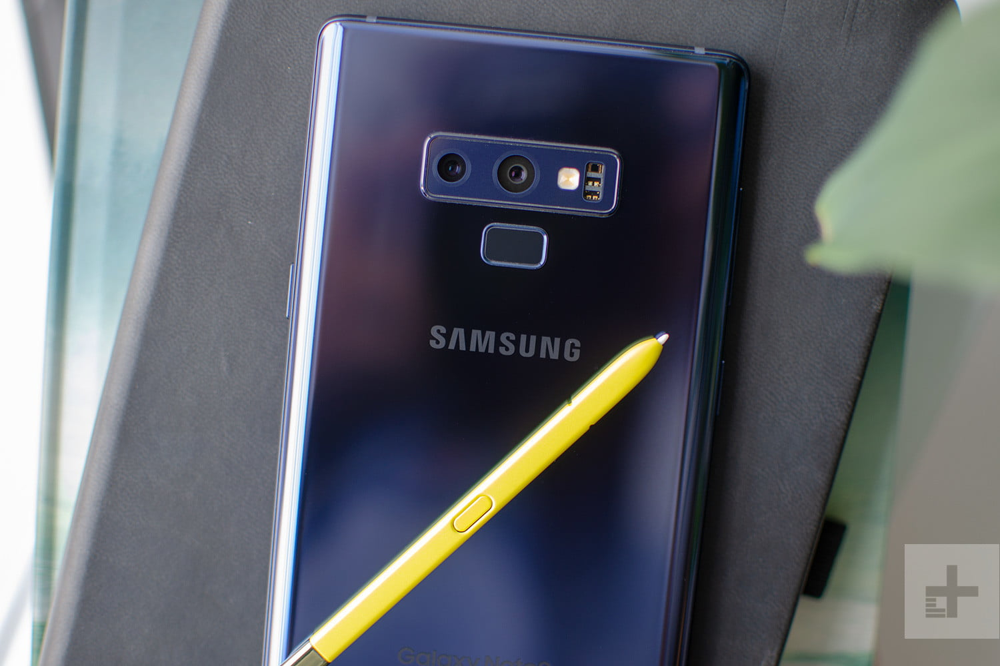

Galaxy Note 9
Do what can't be done.
Denjenigen, die Leistung verlangen, bietet die Galaxy Note-Serie leistungsstarke Technologie, die begeistert.
Das neue Galaxy Note9 kann Ihre Erwartungen übertreffen und stellt das in den Mittelpunkt, was für den mobilen
Lifestyle wichtig ist.

Der Stift mit unzähligen Möglichkeiten: S Pen
Mit dem neuen S Pen mit integrierter Bluetooth-Funktion können Sie auf Tastendruck die Kontrolle über die
Kamera, Präsentationen und Apps übernehmen – ohne dabei das Smartphone zu berühren. Schreiben, Zeichnen, Malen
und Live-Nachrichten versenden fühlt sich mit dem S Pen fast so natürlich und intuitiv an wie mit einem Stift
und Papier – dank einer feinen Spitze und 4.096 Druckstufen.
